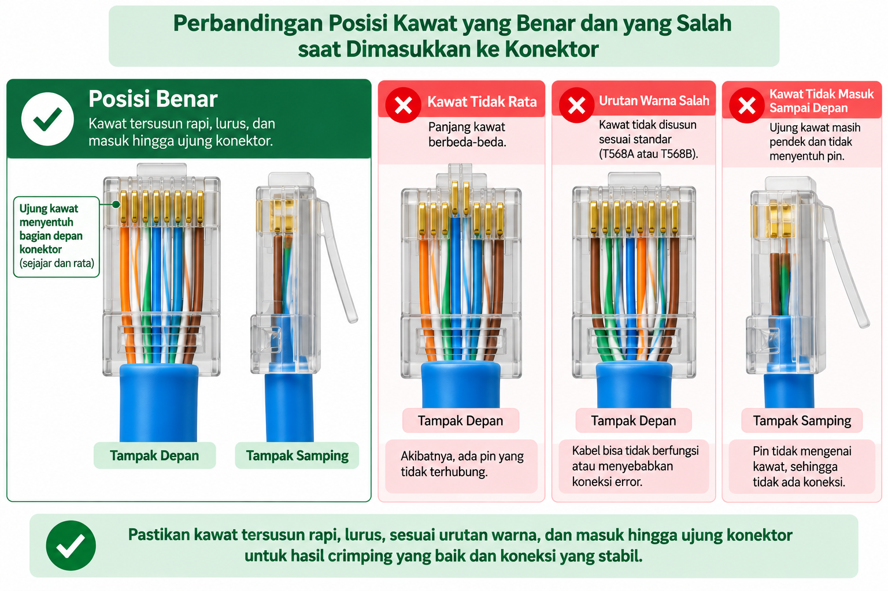

BAB 4 — Teknik Memasukkan Kabel ke Konektor RJ-45
Pertemuan 4 · Alokasi Waktu 3 JP
- Peserta didik mampu memasukkan delapan kawat ke dalam konektor RJ-45 dengan posisi yang benar.
- Peserta didik mampu memeriksa posisi kawat sebelum melakukan crimping.
4.1 Pertanyaan Pemantik: Susunan Benar, Tapi Posisi Salah?
Pernahkah kalian membayangkan keadaan berikut: susunan warna kawat sudah benar-benar sesuai standar T568B, namun kabel tersebut ternyata tetap tidak berfungsi setelah di-crimp? Hal ini bisa terjadi apabila susunan warnanya sudah tepat, tetapi posisi kawat saat dimasukkan ke dalam konektor tidak sampai ke ujung, atau jaket kabel tidak ikut masuk dengan benar.
Inilah sebabnya Bab 4 ini dibuat secara khusus, terpisah dari Bab 3. Menyusun warna dengan benar hanyalah setengah dari pekerjaan; memasukkannya ke konektor dengan posisi yang tepat adalah setengah bagian lainnya yang sama pentingnya.
4.2 Tujuh Langkah Memasukkan Kabel ke Konektor RJ-45
- Pastikan kedelapan kawat sudah tersusun sesuai standar T568B dan telah dipotong rata di ujungnya, sebagaimana telah dipelajari pada Bab 3.
- Pegang konektor RJ-45 dengan posisi pengunci (locking clip) menghadap ke bawah, dan lubang pin menghadap ke atas serta ke arah kalian.
- Perhatikan urutan pin dari kiri ke kanan sesuai posisi konektor tersebut, pastikan urutan warna yang akan dimasukkan sesuai dengan urutan pin 1 sampai 8.
- Dorong kedelapan kawat secara bersamaan ke dalam lubang konektor, dengan gerakan lurus dan mantap, tidak miring.
- Pastikan seluruh kawat terdorong sampai mentok di bagian ujung dalam konektor, sehingga ujung tembaga setiap kawat terlihat menyentuh bagian dalam ujung konektor.
- Pastikan jaket kabel (bagian yang tidak dikupas) ikut masuk sedikit ke dalam konektor, tepat pada bagian belakang yang telah dirancang khusus untuk menjepit jaket tersebut.
- Sebelum melangkah ke proses crimping, tahan kabel pada posisinya dan lakukan pemeriksaan visual sekali lagi mengikuti panduan pada bagian 4.3.

4.3 Empat Pemeriksaan Sebelum Crimping
Sebelum menekan tang crimping, yang tidak dapat dibatalkan setelah dilakukan, periksa empat hal berikut dengan sangat teliti.
| No | Yang Diperiksa | Ciri yang Benar |
|---|---|---|
| 1 | Urutan warna | Sesuai standar T568B dari pin 1 sampai 8, tidak ada yang tertukar. |
| 2 | Posisi ujung kawat | Seluruh kawat terlihat menyentuh bagian dalam ujung konektor, sejajar. |
| 3 | Posisi jaket kabel | Bagian jaket yang tidak dikupas ikut masuk ke bagian belakang konektor. |
| 4 | Kerapian susunan | Tidak ada kawat yang menyilang, terlipat, atau keluar dari jalurnya. |
Mengapa Pemeriksaan Ini Tidak Boleh Dilewatkan?
Proses crimping bersifat permanen. Setelah pin konektor menembus dan mengunci kawat, konektor tersebut tidak dapat dibuka kembali untuk diperbaiki.
Jika ternyata ada kesalahan setelah crimping, satu-satunya cara adalah memotong konektor tersebut dan mengulang dari awal menggunakan konektor yang baru.
Karena konektor RJ-45 jumlahnya terbatas di sekolah kita, memeriksa dengan teliti sebelum crimping akan menghemat bahan latihan bagi kalian sendiri dan teman-teman lainnya.
4.4 Kegiatan Peserta Didik — LKPD 4.1
Berlatihlah memasukkan kawat ke dalam konektor RJ-45 (belum melakukan crimping) sebanyak tiga kali percobaan.
Untuk setiap percobaan, mintalah teman pasangan kalian memeriksa menggunakan tabel pada bagian 4.3, lalu catat hasilnya.
| Percobaan ke- | Urutan Warna | Ujung Kawat | Posisi Jaket | Kerapian | Lolos Periksa? |
|---|---|---|---|---|---|
| 1 | |||||
| 2 | |||||
| 3 |
Rangkuman Bab 4
- Memasukkan kawat ke konektor memiliki tujuh langkah, dimulai dari memastikan susunan warna benar hingga memeriksa posisi sebelum crimping.
- Empat hal yang wajib diperiksa sebelum crimping: urutan warna, posisi ujung kawat, posisi jaket kabel, dan kerapian susunan.
- Proses crimping bersifat permanen, sehingga pemeriksaan sebelum crimping sangat penting untuk menghindari pemborosan konektor.
Latihan Soal Bab 4
- Mengapa susunan warna yang benar saja tidak cukup untuk menghasilkan kabel yang berfungsi?
- Sebutkan tujuh langkah memasukkan kawat ke dalam konektor RJ-45!
- Sebutkan empat hal yang harus diperiksa sebelum melakukan crimping!
- Mengapa jaket kabel yang tidak dikupas juga harus ikut masuk ke dalam konektor?
- Mengapa proses crimping tidak boleh dilakukan secara tergesa-gesa tanpa pemeriksaan terlebih dahulu?
Refleksi Pertemuan 4
- Kesalahan apa yang paling mudah terjadi saat memasukkan kawat ke konektor?
- Apakah saya sudah terbiasa memeriksa keempat hal sebelum crimping?
- Apa yang perlu saya latih lebih lanjut?